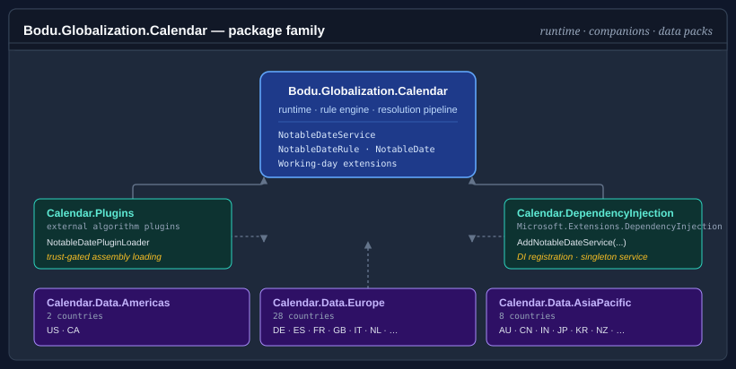

Globalization & Calendars
The Globalization & Calendars topic groups the packages that resolve authored calendar rules into concrete notable dates — public holidays, observances, religious festivals, and regional events — and that make those dates usable for filtering, querying, and working-day-aware date arithmetic. At its center is a single resource-driven engine: rules are authored on the notable-date schema, loaded into an immutable, validated NotableDateResource, and queried through NotableDateService by year, date, or range and territory.
The runtime is intentionally small. Everything beyond the resolution engine — fluent rule authoring, dependency-injection registration, trust-gated plugin loading, resolved-date caching, build-time rule-pack compilation, and the curated per-region holiday data — ships as opt-in companion packages that release on their own cadence. The topic also holds Bodu.Globalization.Recurrence, an independent sibling for RFC 5545 / cron / interval schedules that shares no dependency with the calendar engine. Consumers pull in only the pieces they need: most applications reference the runtime plus one or two regional data packs and never touch the rest.
Packages in this topic
| Package | Status | What it provides | Docs |
|---|---|---|---|
Bodu.Globalization.Calendar |
Stable | The runtime — rule engine, resolution pipeline, built-in date-calculation algorithms, bundled common catalogues, working-day extensions. Required by every other package in this topic. | Introduction |
Bodu.Globalization.Calendar.Builder |
Stable | Fluent, chainable C# API for authoring notable-date documents in code, with XML / JSON serialization and load/save. | Builder guide |
Bodu.Globalization.Calendar.DependencyInjection |
Stable | IServiceCollection extensions for registering INotableDateService over a loaded resource. |
DI guide |
Bodu.Globalization.Calendar.Plugins |
Stable | Trust-gated loading of external assemblies that contribute custom INotableDateAlgorithm implementations. |
Building and extending the service |
Bodu.Globalization.Calendar.Caching |
Stable | CachingNotableDateService, a decorator over any INotableDateService serving computed dates from a per-territory, per-civil-year cache (in-memory or one TOML / JSON file per territory), with its own DI registration. |
Caching guide |
Bodu.Globalization.Calendar.Caching.Sqlite |
Stable | SQLite backend for the notable-date cache (SqliteNotableDateCache / AddSqliteNotableDateCache). |
Caching guide |
Bodu.Globalization.Calendar.Caching.Distributed |
Stable | IDistributedCache / Redis backend for the notable-date cache (DistributedNotableDateCache / AddDistributedNotableDateCache / AddRedisNotableDateCache). |
Caching guide |
Bodu.Globalization.Calendar.Tool |
Preview | The bodu-calendar command-line tool (dotnet tool install): lints notable-date documents with the stable BODU-CAL-* diagnostics, compiles them to sealed .bcal binary packs, and inspects compiled packs. |
Binary rule packs |
Bodu.Globalization.Calendar.Build |
Preview | MSBuild integration — the CompileNotableDatePack task and NotableDatePack items compile documents to .bcal packs incrementally during build via the bundled tool; a development dependency only. |
Binary rule packs |
Bodu.Globalization.Recurrence |
Preview | RFC 5545 recurrence rules (RecurrenceRule / RecurrenceRuleBuilder / RecurrenceSet), CronExpression, and AnchoredInterval — parsing, formatting, and next / previous occurrence queries; depends only on Bodu.Core. |
Recurrence guide |
Bodu.Globalization.Calendar.Americas |
Stable | Curated public-holiday rules for the Americas bundle (e.g. US, CA). |
Data packs guide |
Bodu.Globalization.Calendar.AsiaPacific |
Stable | Asia-Pacific bundle (e.g. AU with subdivisions, CN, IN, JP, KR, MY, NZ, SG). |
Data packs guide |
Bodu.Globalization.Calendar.Europe |
Stable | Europe bundle (e.g. DE, ES, FR, GB, IT, NL). |
Data packs guide |
Bodu.Globalization.Calendar.Africa |
Stable | Africa bundle (e.g. ZA, NG, KE, GH, ET, EG, MA). |
Data packs guide |
Bodu.Globalization.Calendar.MiddleEast |
Stable | Middle East bundle (e.g. AE, SA, IL, TR, QA, JO). |
Data packs guide |
The authoritative dependency and status rows live in the package matrix.
How the pieces fit

A notable date flows through the topic's packages in a fixed order:
- A data pack supplies rules. Each regional pack embeds per-country rule documents that import the shared common catalogues, and exposes a
<Region>CalendarDatafactory (SupportedCountries,LoadResource(territory),CreateService(territory)). Alternatively, you author your own document — as XML / JSON text, or fluently in C# with the Builder's NotableDateDocumentBuilder. - The runtime loads a resource. NotableDateResourceLoader parses the document, resolves its imports against the bundled catalogues, applies overrides, validates, and produces an immutable NotableDateResource.
NotableDateServiceresolves dates. Built over the resource, the service computes each rule's nominal date via its strategy (a fixed date, an nth weekday, an offset from another rule, a named algorithm, or another of the 13 single-date strategies — or a frequency-based recurrence source), applies observance adjustments, settles same-day collisions, and emits resolved NotableDate occurrences for the requested year, date, or range and territory.- Consumers query and compute. Results are filtered with NotableDateFilter and fed into the working-day extensions (
IsWorkingDay,AddWorkingDays,NextWorkingDay, …) inBodu.Extensions.
The companions attach at well-defined seams. Builder authors documents in step 1 without hand-writing XML. Plugins extends step 3 with custom astronomical or ecclesiastical algorithms discovered from external assemblies, admitted only under an explicit, deny-by-default trust policy. DependencyInjection registers the assembled service in a Microsoft.Extensions.DependencyInjection container, including the reloadable runtime-swap workflow. Caching decorates the registered service in step 3 so resolved years are served from a per-territory cache. Tool and Build sit before step 2, validating documents and compiling them to sealed .bcal binary packs at build time.
Which package do I need?
| Scenario | Reach for | Notes |
|---|---|---|
| Resolve US / AU / GB public holidays for a year | Bodu.Globalization.Calendar + the matching regional data pack |
AmericasCalendarData.CreateService("US") is a one-liner; query with service.Resolve(2026, "US"). |
| Working-day arithmetic ("add 5 business days") | Bodu.Globalization.Calendar + a data pack |
The Bodu.Extensions working-day surface ships in the runtime; see the working-days guide. |
| Author custom company dates (closures, fiscal events) in C# | Bodu.Globalization.Calendar.Builder |
Build, serialize to XML / JSON, save, or materialize a resource directly; see the builder guide. |
| Author rules as XML / JSON documents | Bodu.Globalization.Calendar alone |
NotableDateResourceLoader.Load(xml); see rule authoring. |
| Host the service in ASP.NET Core / generic-host DI | Bodu.Globalization.Calendar.DependencyInjection |
services.AddNotableDateService(resource) or AddReloadableNotableDateService(...). |
| Load a custom astronomical algorithm from an external assembly | Bodu.Globalization.Calendar.Plugins |
Trust-gated and default-deny; in-process custom algorithms need only the runtime's NotableDateAlgorithmRegistry. |
| Serve resolved dates from a cache (in-memory, file, SQLite, Redis) | Bodu.Globalization.Calendar.Caching (+ .Sqlite / .Distributed) |
AddCachedNotableDateService() decorates the registered service; see the caching guide. |
Lint rule documents or compile them to .bcal packs at build time |
Bodu.Globalization.Calendar.Tool / .Build |
The bodu-calendar tool for scripts and CI; the Build package for MSBuild; see binary rule packs. |
Evaluate an RFC 5545 RRULE, a cron expression, or a fixed interval |
Bodu.Globalization.Recurrence |
No calendar data involved; compose holiday filtering from outside — see the recurrence guide. |
| Browse what dates the shipped data actually contains | (documentation) | The notable-date catalogue lists every concept by theme and region. |
Install
The runtime plus one regional data pack covers the most common case:
dotnet add package Bodu.Globalization.Calendar
dotnet add package Bodu.Globalization.Calendar.AsiaPacific
Regional packs are independent — install only the regions you need:
dotnet add package Bodu.Globalization.Calendar.Americas
dotnet add package Bodu.Globalization.Calendar.Europe
dotnet add package Bodu.Globalization.Calendar.Africa
dotnet add package Bodu.Globalization.Calendar.MiddleEast
The companions are opt-in:
dotnet add package Bodu.Globalization.Calendar.Builder
dotnet add package Bodu.Globalization.Calendar.DependencyInjection
dotnet add package Bodu.Globalization.Calendar.Plugins
dotnet add package Bodu.Globalization.Calendar.Caching
dotnet add package Bodu.Globalization.Calendar.Caching.Sqlite # optional durable backend
dotnet add package Bodu.Globalization.Calendar.Caching.Distributed # optional IDistributedCache / Redis backend
The rule-pack toolchain — Bodu.Globalization.Calendar.Tool (the bodu-calendar CLI) and Bodu.Globalization.Calendar.Build (its MSBuild integration) — is not published to nuget.org; build both from a clone.
The recurrence sibling stands alone:
dotnet add package Bodu.Globalization.Recurrence
A taste of the surface
using Bodu.Globalization.Calendar;
using Bodu.Extensions; // working-day arithmetic — not auto-imported
NotableDateService service = AsiaPacificCalendarData.CreateService("AU");
// All NSW public holidays for 2026:
IReadOnlyList<NotableDate> holidays = service.Resolve(
2026, "AU-NSW", NotableDateFilter.ForCategory(NotableDateCategory.PublicHoliday));
// Working-day arithmetic that skips weekends and resolved holidays:
DateOnly today = DateOnly.FromDateTime(DateTime.Today);
DateOnly inFive = today.AddWorkingDays(5, service, "AU-NSW");
Territory codes are hierarchical — a query for AU-NSW returns rules authored for AU as well as rules specific to AU-NSW, so national and regional rules compose naturally.
The companions follow the same grain. Hosting the service in a DI container is one registration:
using Bodu.Globalization.Calendar;
using Microsoft.Extensions.DependencyInjection;
builder.Services.AddNotableDateService(AsiaPacificCalendarData.LoadResource("AU"));
// or reloadable, for runtime rule swaps:
// builder.Services.AddReloadableNotableDateService(AsiaPacificCalendarData.LoadResource("AU"));
And authoring a custom date with the Builder produces the same kind of document the data packs embed — see the builder guide for the fluent surface and its XML / JSON round-trip.
Key types across the family
| Type | Package | Role |
|---|---|---|
| NotableDateService / INotableDateService | Runtime | Main entry point — resolves and queries notable dates for a date, range, or year. |
| NotableDate | Runtime | Resolved output — observed date, calculated date, name, category, territory, optional multi-day span. |
| NotableDateResource / NotableDateResourceLoader | Runtime | The immutable loaded document, and the loader that parses, imports, validates, and produces it. |
| NotableDateFilter | Runtime | Composable query predicate — ForCategory, WithTag, InDateRange, combined with And / Or / Not. |
| TerritoryCode | Runtime | Strongly-typed ISO 3166 country / subdivision code with containment semantics. |
| NotableDateOnlyExtensions | Runtime | Working-day arithmetic over DateOnly — IsWorkingDay, AddWorkingDays, NextWorkingDay, … |
| AmericasCalendarData · AsiaPacificCalendarData · EuropeCalendarData · MiddleEastCalendarData · AfricaCalendarData | Data packs | Static per-region factories over the embedded country packs. |
| NotableDateDocumentBuilder | Builder | Fluent C# authoring of a document — build, serialize (XML / JSON), save, or materialize a resource. |
| NotableDatePluginLoader | Plugins | Trust-gated discovery of external algorithm assemblies. |
| INotableDateAlgorithm / NotableDateAlgorithmRegistry | Runtime | The pluggable algorithm contract behind <Algorithm key="…"> rules, and its registry. |
Where to go next
- Topic concepts — the cross-package vocabulary: rule, document, resource, territory, adjustment, algorithm, data pack, trust policy.
- Bodu.Globalization.Calendar introduction — the runtime's mental model, headline types, and scenarios.
- Getting started — install plus runnable minimal samples for loading, resolving, and working-day arithmetic.
- Globalization & Calendars guides — the topic's guide landing page.
- Notable-date catalogue — what dates the shipped data contains, by theme and by region.
- Package matrix — status, dependencies, and install commands for every package.